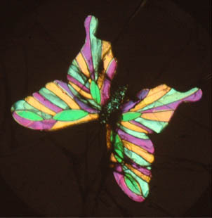
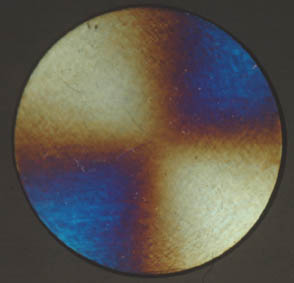

Polarization and Interference Colors
|

|
Selected thicknesses of birefringent materials can be used to form colorful shapes like this butterfly when placed between crossed polarizers. The segments change color when you rotate the front polarizer, but are colorless in ordinary light. These are examples of interference colors.
|
|

|
This material shows a fan-shaped color variation when the polariod is rotated.
|
This sample appears to be ordinary cellophane tape, but it shows a dramatic change in color as the second sheet of polaroid is rotated.
This sample is taken to be a thin slice of a mineral. It shows color changes as it is rotated between crossed polarizers.
|
Index
Polarization concepts
Hecht
Optics, Sec 8.9 |